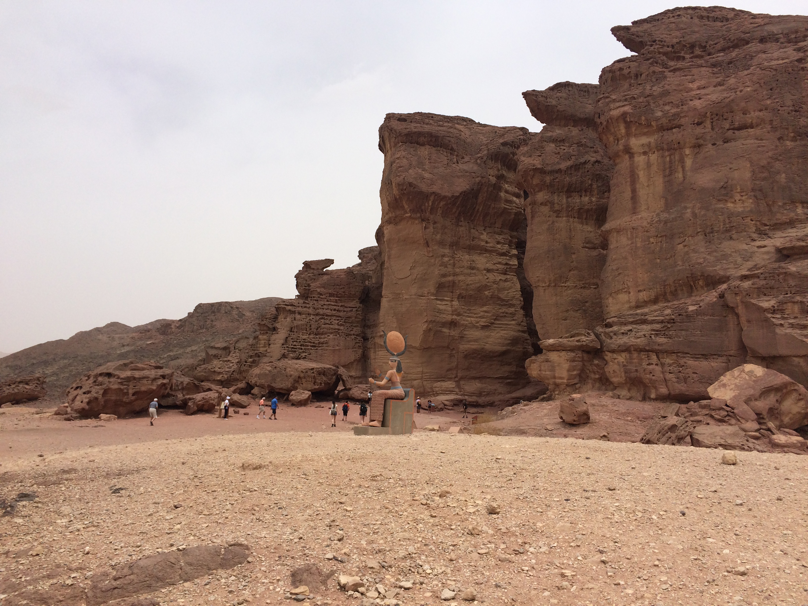

Timna Valley Copper Mines

- Find Name
- Timna Valley Copper Mines
- Description
- One of the world's earliest copper-mining districts: thousands of mine shafts and galleries, dozens of smelting sites, furnaces, slag heaps and miners' camps in a 70 sq km valley about 30 km north of Eilat. Copper was mined here from the 6th-5th millennium BC. Mining peaked under Egyptian New Kingdom expeditions (14th-12th centuries BC), who built a small temple to Hathor, goddess of mining, at the foot of the sandstone 'Solomon's Pillars' — later reused as a Midianite tent sanctuary. Tel Aviv University excavations at 'Slaves' Hill' (2012-2013) radiocarbon-dated a massive smelting camp, with hundreds of furnaces, to the 10th century BC, worked by a local, probably Edomite, society, and found early domesticated camel bones.
- Historical Period
- Chalcolithic–Iron Age (with later phases)
- Evidence Class
- Contextual
- Interpretations
- Nelson Glueck's 1930s attribution of the mines to Solomon is not accepted; the 'Solomon's Pillars' are a natural sandstone formation named by Glueck, not Solomonic work. The 10th-century BC date for Slaves' Hill is radiocarbon-based (11 short-lived samples) and the Edomite attribution is the excavators' reading of a local society, not an inscribed claim. Egyptian-phase and Iron Age-phase mining are distinct operations, not one continuous Solomonic enterprise.
- Alternative Names
- King Solomon's Mines (traditional name, not accepted); Timnah Valley Mines
- Related Books
- Related People
- Scripture Illuminated
- Biblical Significance
- Timna is the copper world behind the bronze of the tabernacle and temple — not proven as their source, but the industry that made such metalwork possible in this region. Its 10th-century Edomite smelters also correct the old 'King Solomon's Mines' romance: the valley's busiest Iron Age phase belongs to Edom, Israel's neighbour and rival, in the very century of David and Solomon.
- Artifact Date
- c. 5th millennium BC - 9th century BC (ancient mining; peak periods Egyptian New Kingdom and early Iron Age)
- Current Location
- In situ, Timna Park, Israel
- Date Discovered
- 1930s (Glueck surveys); 1959-1990 (Rothenberg excavations); 2012-2013 (Ben-Yosef, Slaves' Hill)
- Discovery Location
- Timna Valley, southwestern Arabah, Israel
- Timeline Era
- United Monarchy
Awaiting Review Not yet checked against scholarly sources. Treat its claims as provisional until this entry is reviewed. About verification
Last reviewed: not yet reviewed